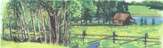
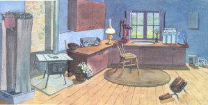
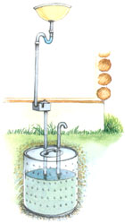
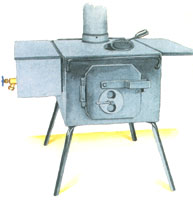
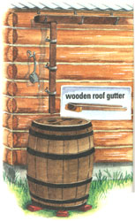

BACKCOUNTRY SKILLS
I thought I was all for going completely wild and hiking ...into the mountains with nothing but a backpack and an ax," I scribbled in 1968 (a bad year all-around for America), when my wife Louise and I quit the big city and went in pursuit of the "Good Life:" a low-tech, low-impact, hand-built, self-sufficiency on the land. Our half-baked, Thoreauesque dream of total rustic independence worked for a while in our new home, but was gradually compromised over 30 years in a flurry of family, farm, big dogs, and community life. Now ...with children grown, our little farmstead community consumed by suburban sprawl, and the homestead hounds passed on to wherever good dogs go, I can once again go as wild as I care to, ax still in hand, but with little other baggage. And it seems that I'm leaving at exactly the right time. The "Good Life-2000" may well permit (perhaps, force) us to exercise the highest degree of personal freedom that is possible today in a modern, urbanized, economically-interdependent republic. We'll remain subject to taxes, laws, and civic duty, but we will thrive best if located completely free of paved roads and sidewalks, water lines, and the myriad self-serving institutions that accompany the power lines, each of them intent on legislating, lobbying, or levying urban-oriented protective tariffs or restrictive codes and regulations that would unreasonably circumscribe our freedom: the combined right and responsibility to provide for ourselves.
The popular term "off-grid" presumes to define all of country life in terms of the absence of a plug into the interconnected network of generating plants and power lines that supply commercial power for a bargain rate of 8 cents to 10 cents per kilowatt/hour. That's if your land already has electric lines out front. If it doesn't, you'll pay the utility up to $35,000 per mile to get them there, and an electrician $1,000 to $2,500 to run a dropline from the pole to the house. If you need to run your line much over 100 feet, you'll need to sink your own poles at $1,000 a pop ...all of which makes independent power-generating systems economically feasible - even if the power they generate ends up costing several times the commercial rates - when the original investment and operating costs are prorated over the eight- to ten-year working life of most systems. The cost is higher in virtually every kind of offgrid system: solar, hydromechanical or hydroelectric, wind or diesel-electric. Or, prospectively, hydrogen fuel cell ...when that rapidly-evolving, zero-emissions technology, now restricted to experimental prototypes, becomes affordable.
If you love the gadgetry and meters, and have no problem making a permanent investment in time and money for an offgrid solar, hydro, or wind system, then Godspeed. Regardless of your choice, it might be better to learn enough to install and maintain your own low-tech systems before signing the check for a new one.
Modem humankind did fine without electricity for at least 10,000 years. The Lascaux cave artists, Socrates, Michelangelo, and Shakespeare worked nights by oil lamp; Abe Lincoln studied law by fireplace light; and Edison invented the electric incandescent lamp by gaslight. Bear with me while - based on my own experience living in places ranging from a camper van, a commercial fishing boat, a camp on the Bay of Fundy, a variety of old houses, and, now, rigging a log cabin in the New England woods - I suggest the range of simple and economical ways to run a complete homestead using handmade power, miles from the power lines.
You may find that you can get along just fine with a hand water pump and solar battery charger plus (grudgingly) a little gas powered generator to run the TV during the World Series or the Three Tenors concerts, and never have to finance and manage that fancy whole-house-powering solar-panel array. One of the best things about alternative energy systems is that you can always add more capacity - buy more solar panels, more battery storage, or a bigger hydra mill or generator. Some of the equipment suppliers will even take trade-ins of outgrown equipment as you upgrade.
But let's begin with the basics.
You do not need the 100 gallons of water per person per day wasted by the typical American home in five- to seven-gallon flushes, two-gallons per minute showers, and using 20 gallons per dishwasher load or to wash dishes by hand with the water running the whole time. But you must have enough good water to drink, wash, cook, and water the garden. See the primitive plumbing article in MEN #150, and Sources on page 62 of this issue for more on water supplies, wells, and pumps.
You'll have to invest in a deep well and solar pump or windmill and a holding tank in the and parts of the country. See Bob McBroom's Kansas Windpower and other suppliers in Sources. On my stomping grounds in New England, the Midwest, and Southeast, a prime requirement for a proper homestead site in the pioneer era as well as today is its proximity to a lake, stream, pond, or a spring that can be tapped for gravity-fed water. For sites that are dry, water can usually be found less than 20 feet down in a handdug concrete or stone-walled shallow well or, in Great Lakes area sand, through the pipe casing of a hand-driven well.
Water less than 20 feet down can be pumped up by simple hand-operated lever-action suction pumps. My grandmothers and great-aunts all had hand pumps at their kitchen sinks; some lived on the farm and some in a country town. All had good water. You will too.
Hand pumps costing from $50 to $250 and more can be found in country hardware stores and in homesteaders catalogs. You run a metal or plastic pipe with a one-way foot valve on its bottom end from pump down to the water, prime the pump to moisten its leathers and supply the nurse water that provides suction, and crank it up. Always keep a gallon of prime water handy - near the stove in winter so it remains thawed and warm.
I have an old-time pitcher pump on the sink now, but plan to install a pressure-pump when I have the $250 it costs. Water is up, but held under pressure in a small pressure vessel on the pump head. By attaching the pump spigot through a rigid hose or water pipe to a water tank, you can hand-pressurize your water supply system and cobble up a shower, garden-watering system, or even a flush toilet.
An electric pump can be put anywhere in the supply line and turned on if your pumping arm gets weary or you need a continual supply - say, to irrigate the sweet corn. SureFlow and other brands of in-line pumps will run you from $79 to $250.
Primarily for garden watering, I spent less than $150 (at Harbor Freight) for a little 1 hp gas-powered water pump made by Homelite, the major U.S. chain saw manufacturer. Powered by a simple (only three moving parts), California-legal (thus clean-burning) 2-cycle engine, if comes with a screened intake hose and pumps 1,860 gallons an hour. I resist using any fossil fuel, but this is a dandy but seldom used little machine that sips its gas-oil mix and is easily portable at under 15 pounds (inlet and outlet hoses included). It can be used to pump water to a 20-foot height above the stream anywhere on the place. I wanted it particularly to prime the siphon-intake I plan for the hydroelectric system that will be located over 100 yards from the house.
With one or two seasonal dwellings and an occasional camper above me on the stream in summer, I'll play it safe and boil stream water for drinking or run it through the reverse-osmosis purifier I've used to make ocean salt water drinkable. Lehman's and Real Goods' Renewables catalogs offer the widest choices of filters, stills, and purifiers we've seen.
Anyway, summer drinking water should come from a traditional rain barrel. I have a pair of old wooden gutters that I'll rig under the eaves of the generator shed roof; I'll run the downspout into a big oak barrel set up on bricks with a roof-cleaner bypass and wooden top to keep out pine needles and mosquitoes. Lehman's sells new barrels up to 30-gallon size and Cumberland Farms offers a 40-gallon oak model. In time, a mossy lip will grow around the edge, and maybe a little peeper frog will move in. If mosquito larvae get in as well, I'll catch a few dragonfly nymphs from the stream and sic 'em on the wigglers. Naturally soft and pure, water from a mossy-lipped rain barrel offers the best drink there is, and it is unmatched for making crystal-clear jelly and for washing little girl's hair literally squeaky clean. I already have an old-time speckled-porcelain Grannyware ladle I'll hang alongside to dip water out with.
For deep winter, the barrel is emptied better than halfway, a log is floated in the water that's left, and the whole is wrapped in a plastic tarp. I suppose that, back on the grid, it would be quicker and easier to sink an electric heater or a bubbler in the water to keep it from freezing. But a power outage might get you a burst barrel.
In the forested parts of the continent or over the vast stretches of flatland and low hills where marginal farmland is returning to woods, I can see no justification for heating and cooking with anything but wood. It does generate CO 2 - a primary greenhouse gas. But if trees are selectively harvested at the rate of one cord per acre, you are burning no more wood than would rot naturally over time, releasing as much CO 2 as when burned. It is an environmental wash.
You can add the ashes to the garden for their potash, content or steep them in rainwater to make mild lye for converting corn to hominy, treating hides, or making soap.
The EPA requires new heating stoves sold in America to burn clean. EPA-compliant high-output (whole-house-heating) new-model heating stoves contain catalytic smoke cleaners, weigh a half-ton, burn cold, and cost $1,000 and up. But the economy-minded can still get smaller EPA-compliant "high-tech" stoves, non-airtight heaters, used pre-EPA models, and all-new cookstoves and outdoor heater/cookers at reasonable prices.
Look in the want ads for used stoves; look in country hardware stores, stove shops, and mail-order catalogs for new ones (see Sources).
For the preliminary stages of moving off-grid, many of us will be living in temporary structures, tents, or trailers. You can find little folding tin stoves for such places. In the hands of inexperienced wood-burners, though, these can overheat and burn through or collapse.
A better choice in our view - and one that can move inside to heat and cook for you indefinitely - are the welded-steel box stoves from Don Kevilus's Four-Dog Stove Company in St. Francis, Minnesota (where they do have four-dog nights). Patterned on the Jotul box stove that Eva Horton imported from Norway to Portland, Maine, and that reintroduced America to wood heat back in the 70s, the Four-Dog and its smaller Three- and Two-Dog littermates are made of safe but relatively lightweight 3/32" hot-rolled steel, have an airtight gasketed door with a secure latch, and a heat-retaining/spark-arresting smoke baffle in the firebox. Beautifully made with elegant welds and priced well under $200 (a bargain), they can be ordered with removable side shelves and a 12" riser with damper and a four-part, 5"-diameter telescoping stovepipe for easy portability. Legs are easily removed, but stay in when attached. Mine sports an optional removable cook lid for quick-cooking heat.
These stoves are intended only for the outdoor activities of buckskinners and muzzle-loading-era historical reenacters, campers, and hunting and fishing expeditions. But I will line the sides and bottom of mine with firebrick, hook it to the existing 7" stovepipe with a $3, 5"- to 7"pipe reducer, and use it in the cabin till I can afford a kitchen range. Then it will go to work heating the workshop with wood scrap, and stand by for camping trips deeper into the woods.
For baking in camp, you can find collapsible tin ovens. But for under $150, Lehman's sells a definitely noncollapsible 15" x 21" Amish-made two-rack steel cabinet oven with a hinged bottom and toplatched door that fits perfectly atop the Four-Dog's 15 1/2" x 24" top. It will also cover two burners of a propane cook top. It has a temperature gauge in the door, but no automatic heat control. As with any wood-fired oven, baking is an active process requiring constant attention and work.
Don K. also sells a stainless steel water font that sits on top or can be hooked to the side of his Four-Dog model. It can be heated on top of the propane cooktop in the heat of summer. With a hinged lid and a spigot, it wlll heat about five gallons of water for cooking, dish-washing, or mixing with cold water to supply a tub bath, one luxury shower or two quick ones.
For the rare occasion that I spavin my back or get knocked flat by a flu bug and take no pleasure in splitting wood, I am installing a no-vent propane radiant-energy space heater in the north wall of the cabin. Costing around $150, these are easy to install, run forever off a 20-pound propane tank, and pose no more danger than a gas oven: they have low-oxygen and high-temperature sensors that shut them off if the burner malfunctions. They create enough convection in the room that heat is distributed naturally, and no fan is needed. Since the propane generates its own feed-pressure, the heater operates without any electricity at all.
I'll counsel you against using kerosene space heaters - even in places where they are still legal. I heated with them for a year in the 1980s, They generate warmth, but unless you get fresh #1 jet fuel from an airport, the wicks will clog and smoke. Even new, clean-burning wicks will cover everything with a malodorous kerosene-oil film.
For years, the SunShower, a five-gallon black plastic bladder with a hanging ring at one and and a hose with a shower head and on/off valve at the other had a lock on the off-grid shower market. Hung in the sun for a few hours, it will heat water for two showers or a shower and shampoo. The new '98 models have done themselves one better, adding a little squeeze-pump to pressurize the flow. The outdoor-sports catalogs list SunShowers fastened to a circular hanging curtain that can be suspended from a tree limb to provide a shower with privacy. I have one in an unaccountable camouflage pattern and it is great outdoors ...during warm weather.
For cold weather, I will eventually build a wood-heated shower/laundry house. For indoor showers now, I have hung the SunShower and curtain over a big plastic storage "tote-bin" beside the stove. Filled with water from the FourDog stove font, the warm shower feels about as good as it gets after a day's work.
Any gravity shower dribbles rather than stings. The next step is a pressurized shower. One ready-made option is the Hot-Man Camp Shower for $120 - $99 on sale - from Wyoming River Raiders' canoe, raft, and kayak catalog. It is a stainless steel, two-and-a-half-gallon garden-sprayer tank fitted with a temperature gauge, hand pump, shower head and valve that you can set right on the stovetop to heat. It needn't be hung up to work. I've thought of filling a five- or seven-gallon plastic backpack garden sprayer with water from the font and pressurizing that for the shower, but I think I'll stick with the gravity shower till I get the hand pump for the sink.
As with everything else off-grid, a hot shower takes a little planning and a little work. But that just makes it all the more rewarding.
Being so close to the stream, the first job I undertook was to install an adequate dry well in the ground under the sink drain to accommodate so-called "greywater." Assuming two five-gallon showers and cooking and heating for two people a day, I drilled several quarter-inch-wide holes in the sides and bottom of a straight-sided 20-gallon plastic bucket and sunk it in a 6" bed of stream gravel - its top 6" under soil level. The drainpipe pokes down into a hole in the bucket's removable (for inspection and clean-out) top, and a length of rigid pipe pokes down into another hole and up a foot above ground to let gasses from natural decomposition of kitchen waste escape.
Under the sink, I installed a conventional "S" shaped water trap to keep gas out of the interior, and at floor level put in a good-sized grease trap. Before using the dry well in winter, I will have to sink the chamber several feet deeper and surround the drainpipe with at least 6" of insulation. The water intake, too, will need to be buried and insulated if it is to remain flowing in winter. I may have to fit it with a circulating warm-water loop from the house or with an intermittent heat tape from the electric power system.
When I put in a laundry and shower house (perhaps with a hot tub), I will have to build a much larger dry well with a leach line running parallel to the stream bed and at last 30 feet from the water.
As washwater is "greywater," human waste is called "blackwater" in the plumber's trade. But close to a stream, excrement has no business being mixed with water and drained off - even through a full-sized septic system. For a toilet in summer-only use, the generator shed sports a closet containing a chemical toilet: a one-holer outhouse built high over a plastic tub holding a shallow few gallons of strong caustic disinfectant. The holding tank is ignored over winter, pulled every spring, and the remaining slurry, sterile and neutralized by time, is buried in the woods at least 100 feet from the water.
For indoor use, I curtained off - then built a cubicle on - the front porch (that is heated by blown-in house air), and put in a Porta-Potti: a compact, hand-portable chemical toilet that goes for $100 at any camping equipment outlet. It has an upper chamber that contains the bowl and is filled with water and a blue powder sanitizing/flushing solution that is activated by a hand-pump of marginal utility. The system functions best if used with biodegradable toilet issue. The lower holding tank seals well and can be detached so that the sterile, odorless, liquefied contents can be taken away to be buried, emptied in any flush toilet (on a septic tank or sewer), or at a marine or RV pumpout station.
I will replace the Porta-Potti with a full-size composing toilet when I get up the $1,000 price tag. All established brands have been use-tested and improved for decades. With no self-cleaning water bowl needed and a rake or drum type agitator periodically mixing waste with peat moss or other organic matter, they need cleaning less often than a flusher, and produce a bucket of finished compost every few months to go on the ornamental plants in your front yard. Some high-usage models use small electric fans or heaters to speed the composting process and evacuate any fumes. But the best-sellers work fine by letting nature take its course; all you need do is vent the composting chamber and crank the agitator now and then.
All these toilets make you get closer to your own by-products than a flush-and-pretend-it-never-happened water-waster, but all of life off-grid gets you closer to reality. That may be its primary benefit.
During the winter and most spring and fall mornings and evenings in the mountains, temperatures fall enough to need a wood fire. Except during hot spells, all cooking can be done on the wood stove. For those hot summer days, any propane-fueled camp cooker will make coffee and cook quick hot meals.
The outdoor catalogs offer a variety of propane cookers that I have found nowhere else. For shop chores as well as summer cooking, I use a $60, medium-high-output two-burner cast iron cooktop fueled from a large outdoor propane tank and intended for outdoor use. A trivet will tame a single burner to a slow simmer, while both burners roaring at full power will heat oil for tempering steel, a chickenfeather scalding kettle or the Four-Dog water font in minutes. In an emergency, it can heat the cabin. You light it with a match or barbecue spark lighter; there's no pilot light or piezoelectric lighter to waste fuel or go on the fritz. If a pot of stew boils over and bums, the whole thing can be soaked in the stream till the burned-on mess loosens. After a good wire-brushing, it has to be oiled before the cast iron begins to rust.
Refrigeration is the great bugaboo of offgrid living. The refrigerator, warn the experts, is the single greatest electricity-user in a modem home. And who but a large family with ever-hungry kids really needs a huge modern refrigerator? I sure don't. Mine was always full of ancient leftovers and partly empty jars of pickles. When first planning to move off-grid, I logged my visits to the fridge. More than 90% were for coffee creamer. I ate maybe one pickle a month.
Last summer, I had no electric cooling but made an ad hoc spring house by arranging a crib of rocks in the stream so stuff wouldn't roll downstream and kept watermelons, coffee creamer, bottled drinks and sealed food containers at 40°F the easy, natural way. When weather gets cold, I have an old-fashioned oak-and-brass icebox that I'll back up to a hole drilled through a cold wall and pull cold outside air through with a tiny fan running on a solar cell. (It came from a surplus outlet, made originally to go on a funny hat with a solar-powered cooling fan that you've probably seen for sale in catalogs.)
See "Fridge-less Living" in MEN #169 for a variety of low-tech cooling techniques.
For more assured refrigeration, I have one of those solid-state holding-plate cooler/heaters in an insulated chest. From Real Goods, mine uses a fraction of the power of a conventional cooler. (And the coolers use a fraction of the power of any compressor-cooled fridge.) It opens from the top, so all the cold doesn't cascade out as with a front-opener. It will hold a month's worth of coffee creamer and a week's supply of fresh meat, eggs, and cheese. I've learned to cook smaller meals, and to use one jar of pickles before opening another.
If I ever need a really big fridge, I'll follow J. E. Lehman's own example and get a Servel from him - though I'll take the kerosene model (he has used a gasburner since before World War II). The kero-burner uses dirt-simple Aladdin lamp parts and uses about a gallon-and-a-half of fuel a week. When I am settled in, I'll save up and order a kerosene freezer to store garden produce; I'll keep it in the generator/wood shed.
In three decades of depending on country-grid-power systems that are liable to outages with every wind storm, I've cooked and eaten supper on many a night by the light of a Dietz kerosene lantern. From a time-tested 18th-century railroad signalman's design, they are simple, sturdy, and better quality by far than the ornamental kerosene lamps you find in stores. Ordinary kerosene, even #1 jet fuel, stinks. Lamp-grade costs a bit more but is worth it, and you will use surprisingly little.
Going into a hay-filled barn at night with a burning gas or kerosene lantern is asking for a conflagration, so every country place needs a supply of flashlights and battery lanterns. But you no longer have to waste money and clog the landfills with throwaway batteries. Rechargeable NiCads are sold in every drugstore. For area lighting, I have a $25 twin-bulb fluorescent lantern. It will function for ages on eight "D" cells.
The trouble with Ni-Cads, of whatever size, is that they are expensive, discharge quickly, and rarely equal the voltage of their alkaline counterparts. There are rechargeable alkalines out there however (also pretty pricey), as well as rechargers that will take even your old-fashioned alkalines. You still have to plug the charger into something, though. So you may well want to consider ...
There are some things that kerosene or dry cells can't run: electronics in particular. In this first stage off-grid living, I have two higher-power power sources.
One is the truck's engine, alternator, and battery. I use a $50 Whistler autotype inverter that produces 800 watts of crude AC from two outlets. With the engine set on fast idle, it can run power tools, appliances, or an auto-type battery charger. I use it to charge batteries for cordless tools and to operate circular saws and such. The inverter attaches to the vehicle battery with a pair of clamps so any car, truck, or tractor can serve as an emergency electricity generator.
For now, my main power source is a, two-cycle engine powering a 350 watt AC/DC generator. It came with a full set of rebuilt parts. I use its AC to power direct-satellite (DSS) TV, lights, and radio from conventional sockets on the single circuit of electrical wiring in the cabin. The DC is used directly and to charge up a "Power-to-Go" battery pack normally carried in vehicles to jump start the engine if the battery dies. In the cabin, I hook the Power-to-Go unit to an Xeltech true sinewave inverter ($225) and power-sensitive electronics (including the cooler). From Radio Shack, I got jumper cables and an autotype cigarette-lighter socket to use in experimenting with battery-powered DC lights and appliances.
I do want to operate my 500-watt hydroponics lights, an air conditioner, and a wood and metal shop, and (with expert advice) plan to install a hydroelectric plant and solar panels, a diesel-electric auxiliary generator, and a full set of storage batteries, controllers, etc., to make them go.
But as a first step in off-grid living, we're having a great deal of fun - and learning the basics of alternative power - by meeting the needs of day-to-day life using hand-power or simple-tech. I urge you to consider doing the same. You may never need anything more elaborate.
|
 ILLUSTRATIONS: BELLA HOLLINGWORTH Ingredients for the off-grid home:a gravity shower adjacent to a Four-Dog stove (slate hearth and rock wall for safety), a cooker hooked to the outside propane tank,oil lamp, pitcher pump, reverse-osmosis water filtering system, 12-volt cooler, and 12-volt Power-to-Go unit. |
 A simple two-person greywater dry well |
 A portable Four-Dog stove weighs 55 pounds, cost $175, and will keep you warm on a four-dog night. |
|
 A 40-galloon basswood rain barrel on brick supports |
 |
|